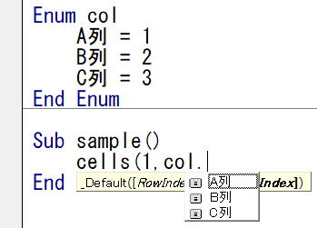
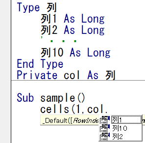
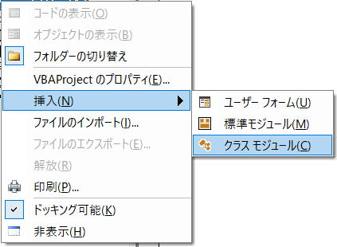

VBAクラスの作り方：列名の入力支援と列移動対応
クラスを使う良さとして、入力支援が使えてコーディングが楽になるという利点があります、
列番号をクラスに持てば、列名が候補表示されて非常に便利です。
しかし、
これを実装するには、かなりの手間がかかります。
つまり、
クラス作成に手間をかけて、その後を楽にするということになります。
クラスを使う理由は入力支援だけではなく、むしろそれは結果としての付属的なものでしかありません。
列名で指定したいだけなら、
列挙体(Enum)
構造体(Type)
クラスについての概要は、VBAのクラスとは（Class,Property,Get,Let,Set）
入力支援（インテリセンス、メンバー一覧が候補表示）の状況と、
列挙体と構造体を使った場合の具体例を見てみます。

問題点としては、列を入れ替えたり列挿入したりすると、列挙体の記述を変更しなければならない点です。
列タイトルに事前に名前定義しておくことで、実行時に名前定義をもとに列数を取得します。
Range("名前定義の名前").Column
これで取得した列数をVBAで使うことで、列移動や表の途中に列挿入されても正しい列位置で処理ができるようになります。
名前定義で取得した列数は、そのまま使うか変数に入れるしかありません。
つまり、列挙体と名前定義の両方を同時に使う為には工夫が必要です。
列挙体に合わせた配列を用意しその中に名前定義で取得した列数を入れる方法が考えられます。
列1 = 1
列2 = 2
・・・
列10 = 10
End Enum
・・・
Dim ary(1 To 10)
ary(列.列1) = Range("名前定義の名前").Column
Cells(i, ary(列.列1)) = ・・・
構造体を使った列名表示の例

列1 As Long
列2 As Long
・・・
列10 As Long
End Type
col.列1 = Range("nm氏名").Column
Cells(i, col.列1) = ・・・
列位置変更がないのなら、列挙体が一番簡単で、
列位置変更に対応するなら、構造体＋名前定義が最も良い方法になると思います。
クラスは、関連するデータを一つにまとめ、さらに関連する操作まで組み込める機能だと理解すればよいでしょう。
しかし、とにかく最初は全体のイメージを持つことが重要ですので、
関連するデータやその操作を一つにまとめたものがクラスであり、
つまりは、構造体＋関連するプロシージャーを一つにまとめたもの、これくらいの認識でも構いません。。
従って、構造体を使ったことが無ければ、まずは構造体を少しでも理解してからクラスに入ったほうが理解がしやすいと思います。
クラスに関する基本のおさらい
オブジェクト指向とは
対象物を部品を使って組み立てるように表現してプログラミングしていくものです。
・継承 (inheritance)
・多態性 (polymorphism)
VBAでは、継承も多態性も使えない。（インターフェースだけ使える）
従って、カプセル化だけを意識すれば良いのです。
つまり、関連するものを一つのカプセルにまとめ、
そのカプセルをコピーしつつ使いまわすというイメージになります。
必要なもののみ外部に公開し、不必要なものは非公開として隠蔽します。
隠蔽が正しくできないと、
カプセルの中身をあちこちから何時の間にか変更されたりして困ることになります。
全体の機能と構成
サンプルして使うシート

氏名
氏名（カナ）
性別
生年月日
年齢
郵便番号
都道府県
電話番号
備考
・クラスを新規挿入
・クラスに列数取得のプロシージャーと対象シートを受け取るプロパティを作成
・クラスに列名のプロパティを作成
・クラスの完成コード
シートに名前定義を設定
シートの列タイトルに名前定義を設定します。
上記サンプルシートでは1行目になります。
'表の列タイトルのセルにタイトル文字列より名前定義設定
Sub SetTitleName()
Const strPre As String = "nm" '名前定義のプリフィックス
Dim ws As Worksheet '対象シート
Dim NameRow As Long '列タイトル行
Dim strName As String
Dim i As Long
Set ws = Worksheets("顧客マスタ")
NameRow = 1
With ws
For i = 1 To .Cells(NameRow, .Columns.Count).End(xlToLeft).Column
If .Cells(NameRow, i) <> "" Then
strName = editName(.Cells(NameRow, i))
.Names.Add Name:=strPre & strName, _
RefersTo:="=" & .Cells(NameRow, i).Address
End If
Next
End With
End Sub
'記号は_に変換：名前定義とプロパティ名に使うので
Private Function editName(ByVal strName As String) As String
'記号の一覧は使用しそうな記号を適当に記載
'名前定義とプロパティ名に使えない記号は_に置換
Const cnsSymbol As String = "!""#$%&'()=-~^|\`@{[+;*:}]<,>.?/\ "
Dim strSymbol As String
'CrLfは消去
strName = Replace(Replace(strName, vbCr, ""), vbLf, "")
'空白（スペース）は消去
strName = Replace(Replace(strName, " ", ""), " ",
"")
'全角記号も対象
strSymbol = cnsSymbol & StrConv(cnsSymbol, vbWide)
'記号を_に置換
Dim i As Integer
For i = 1 To Len(strSymbol)
strName = Replace(strName, Mid(strSymbol, i, 1), "_")
Next
If Right(strName, 1) = "_" Then
strName = Left(strName, Len(strName) - 1)
End If
editName = strName
End Function
列タイトル行のA列から最終列までの空白セルを除くセルに名前定義を設定しています。
名前定義の詳細については、名前定義（Names） こちらを参照してください。
列タイトルには、各種の記号が使われている場合があるので、
名前定義に使う名前（後でプロパティ名としても使います）にするために、
_(アンダーバー)以外の記号を_(アンダーバー)に置換します。
ただし、そもそも列タイトルに色々な記号を使うことはあまりお勧めしません。
改行コードやスペースは削除しています。
ここで作成する名称は、名前定義と、クラスのプロパティ名としても使いますので、
本来なら、_(アンダーバー)以外の記号は全て外したいところですが、
ここでの本旨から外れるので、簡易的にキーボードから簡単に入力できる記号だけの判定にしています。
記号を完全に排除する場合は、
文字種（ひらがな、全半角カタカナ、半角英大文字等々）の判定
シート.Names.Add
としているので、名前の適用範囲はそのシートに限定されます。
列タイトルは、他のシートの列タイトルと重複してしまうので、これを避けるためです。
名前にシート名を入れることでも対応できますが、
名前が長いとプロパティ名として扱うときに不便なので、なるべく短く済むようにするためです。
従って、同一シート内の列タイトルは重複しないようにしなければなりませんし、
さらに、適度な長さの適切な名称にしておく必要があります。
クラスのプロパティ名としても使いますので、プロパティ名として適切なということになります。
つまり、入力支援で表示される名称としてふさわしい名称ということであり、
その規則は、VBAの変数名で許可される文字列ということです。
・英数字（全角半角）、漢字、記号はアンダーバー(_)だけ使える、空白（スペース）は使えない
・先頭には、数字やアンダーバー(_)は使えない、英文字か漢字で始める
・使えない予約語がある
・長さは半角で255文字まで
そのようなときは、名前定義に使う名称を別の行に設定しておくことで対応できます。
1行目に名前定義で使う名称
2行目は空行 ・・・ これが無いとエクセルのデータベース機能が使えなくなります。
この2行を非表示にしておけば見た目は元のままです。
この場合は、上記VBAコードの
NameRow = 1 を NameRow = 3 に変更することになります。
この準備は、先に書いた
列挙体(Enum)
構造体(Type)
クラスを新規挿入

次々に挿入していくと、2,3,と連番で作成されます。
これを変更します。
オブジェクト名：clsColumns
プリフィックスとして「cls」「class」等を付けておくことをお勧めします。
使うときに、As やNew の後で、「cl」と入力すると候補一覧が出て簡単に指定できるようになります。
Option Explicitだけが書かれた白紙が出てきます、標準モジュール作成時と同じですね。
クラスに列数取得のプロシージャーと対象シートを受け取るプロパティを作成
名前定義の列数を取得するのは簡単です。
シート.Range("名前定義の名前").Column
これで取得できます。
対象のシートを受け取るプロパティと、これを受け取って列数を返す関数（Function）を作成します。
また、名前が無いとエラーになるので、エラー処理も入れておきます。
Private ws As Worksheet
Public Property Set Worksheet(ByVal argWs As Worksheet)
Set ws = argWs
End Property
Private Function getColumn(ByVal argName As String) As Long
On Error Resume Next
getColumn = ws.Range(argName).Column
If Err Then
MsgBox "名前定義不正：" & argName
End
End If
End Function
クラス作成ではカプセル化を意識します。
そして、カプセル化の重要な要素として隠蔽があります。
むやみに内部を公開しないということです。
つまり基本的にはPrivateで作成し、外部に公開が必要なもののみPublicにします。
対象のシートを受け取るプロパティが、
Public Property Set Worksheet(ByVal argWs As Worksheet)
引数でシートのオブジェクトを受け取ります。
これはSetだけなので、書き込み専用プロパティ（入口専用、値を受け取るだけ）ということです。
Private Function getColumn(ByVal argName As String) As Long
引数で名前定義の名前を受け取ります。
このように1行で書いても構いません。
違いはVBA内部処理の違いなので、特に気にする必要はありません。
つまり、それ以外は隠蔽されていて、外部からは扱えなくなっています。
クラスに列名のプロパティを作成
名前定義の名前を受け取り、列数を返すプロパティを作ります。
Public Property Get 顧客ID() As Long
Static c As Long
If c <> 0 Then 顧客ID = c: Exit Property
c = getColumn("nm顧客ID")
顧客ID = c
End Property
サンプルシートではA列の列数を返すプロパティが、
Public Property Get 顧客ID() As Long
これはA列なら1を返します。
これはGetだけなので、読み取り専用プロパティ（出口専用、値を返すだけ）ということです。
次回呼ばれたときに、前回の値が入ったままの状態ということです。
そこで、ここではStatic変数に値を入れることで、最初の1回だけgetColumnを呼び出すようにしています。
Privateなモジュールレベル変数として定義、全列の列数を変数に格納するメソッドを実行し変数に値を入れておく。
このように作成することも可能です、むしろそのほうが一般的かもしれません。
列数が多く、多くの列をVBAであつかうのであれば、そのほうが良いでしょう。
Private p顧客ID As Long
Private p氏名 As Long
'・・・
Public Property Set Worksheet(ByVal argWs As Worksheet)
Set ws = argWs
End Property
Public Property Get 顧客ID() As Long
顧客ID = p顧客ID
End Property
Public Property Get 氏名() As Long
氏名 = p氏名
End Property
Public Sub Init()
p顧客ID = getColumn("nm顧客ID")
p氏名 = getColumn("nm氏名")
End Sub
'・・・
今回は、汎用的なものとして、VBAで扱う列がどの程度か不明なので、
実際にその列を扱うときに取得するようにしたということです。
また、
変数を使った方法では、一つのフィールドに対する記述が3箇所に分散しています。
これは、メンテナンスするときに面倒な作業となります。
（変更なら置換すれば良いのですが、追加の場合には3箇所で追加作業が必要です。）
今回の方法なら、一か所にまとまっているので、メンテ作業はしやすいので採用したということです。
差異があるとしても、かなり僅かな差異なので、かなり大量の繰り返し処理をしなければ体感できる差異はないと思います
そのような必要性があるときは、個別に対応策を考える必要があります。
入力支援にクラス名が表示されるのが確認できます。
つまり、それ以外は隠蔽されていて、外部からは扱えなくなっています。
Sub sample()
Dim cls As clsColumns
Set cls = New clsColumns
Set cls.Worksheet = ActiveSheet
MsgBox cls.顧客ID
End Sub
サンプルシートであれば、1が表示されます。
顧客ID以外の全てのフィールド（列タイトル）のプロパティを作成します。
Public Property Get 氏名() As Long
Static c As Long
If c <> 0 Then 氏名 = c: Exit Property
c = getColumn("nm氏名")
氏名 = c
End Property
Public Property Get 氏名_カナ() As Long
Static c As Long
If c <> 0 Then 氏名_カナ = c: Exit Property
c = getColumn("nm氏名_カナ")
氏名_カナ = c
End Property
Public Property Get 性別() As Long
Static c As Long
If c <> 0 Then 性別 = c: Exit Property
c = getColumn("nm性別")
性別 = c
End Property
Public Property Get 生年月日() As Long
Static c As Long
If c <> 0 Then 生年月日 = c: Exit Property
c = getColumn("nm生年月日")
生年月日 = c
End Property
Public Property Get 年齢() As Long
Static c As Long
If c <> 0 Then 年齢 = c: Exit Property
c = getColumn("nm年齢")
年齢 = c
End Property
Public Property Get 郵便番号() As Long
Static c As Long
If c <> 0 Then 郵便番号 = c: Exit Property
c = getColumn("nm郵便番号")
郵便番号 = c
End Property
Public Property Get 都道府県() As Long
Static c As Long
If c <> 0 Then 都道府県 = c: Exit Property
c = getColumn("nm都道府県")
都道府県 = c
End Property
Public Property Get 電話番号() As Long
Static c As Long
If c <> 0 Then 電話番号 = c: Exit Property
c = getColumn("nm電話番号")
電話番号 = c
End Property
Public Property Get Email() As Long
Static c As Long
If c <> 0 Then Email = c: Exit Property
c = getColumn("nmEmail")
Email = c
End Property
Public Property Get 備考() As Long
Static c As Long
If c <> 0 Then 備考 = c: Exit Property
c = getColumn("nm備考")
備考 = c
End Property
これで、全ての列名が入力支援に表示されます。
（どこでもといっても、定数値を書かなければならない場所には書けませんが）
クラスの完成コード
以下が、今回のクラスの完成VBAコードです。
Option Explicit
Private ws As Worksheet
Public Property Set Worksheet(ByVal argWs As Worksheet)
Set ws = argWs
End Property
Public Property Get 顧客ID() As Long
Static c As Long
If c <> 0 Then 顧客ID = c: Exit Property
c = getColumn("nm顧客ID")
顧客ID = c
End Property
Public Property Get 氏名() As Long
Static c As Long
If c <> 0 Then 氏名 = c: Exit Property
c = getColumn("nm氏名")
氏名 = c
End Property
Public Property Get 氏名_カナ() As Long
Static c As Long
If c <> 0 Then 氏名_カナ = c: Exit Property
c = getColumn("nm氏名_カナ")
氏名_カナ = c
End Property
Public Property Get 性別() As Long
Static c As Long
If c <> 0 Then 性別 = c: Exit Property
c = getColumn("nm性別")
性別 = c
End Property
Public Property Get 生年月日() As Long
Static c As Long
If c <> 0 Then 生年月日 = c: Exit Property
c = getColumn("nm生年月日")
生年月日 = c
End Property
Public Property Get 年齢() As Long
Static c As Long
If c <> 0 Then 年齢 = c: Exit Property
c = getColumn("nm年齢")
年齢 = c
End Property
Public Property Get 郵便番号() As Long
Static c As Long
If c <> 0 Then 郵便番号 = c: Exit Property
c = getColumn("nm郵便番号")
郵便番号 = c
End Property
Public Property Get 都道府県() As Long
Static c As Long
If c <> 0 Then 都道府県 = c: Exit Property
c = getColumn("nm都道府県")
都道府県 = c
End Property
Public Property Get 電話番号() As Long
Static c As Long
If c <> 0 Then 電話番号 = c: Exit Property
c = getColumn("nm電話番号")
電話番号 = c
End Property
Public Property Get Email() As Long
Static c As Long
If c <> 0 Then Email = c: Exit Property
c = getColumn("nmEmail")
Email = c
End Property
Public Property Get 備考() As Long
Static c As Long
If c <> 0 Then 備考 = c: Exit Property
c = getColumn("nm備考")
備考 = c
End Property
Private Function getColumn(ByVal argName As String) As Long
On Error Resume Next
getColumn = ws.Range(argName).Column
If Err Then
MsgBox "名前定義不正：" & argName
End
End If
End Function
最後に
今回作成したクラスですと、先に解説した構造体(Type)との違いがはっきりしません。
といいますか、結果としての機能は同じです。
一つの標準モジュールに構造体とFunctionを入れれば同じことになります。
他に作成するクラスがないのなら、構造体で良いでしょうし、
他のクラスを作るのなら、ついでにクラスが良いのではないかというくらいでしかありません。
フィールド数分のプロパティが必要なので、これを全部タイピングするのは時間がかかります。
（VBAで扱わない列のプロパティは作る必要はありませんが）
だからと言って、
プロパティの代わりに列名の変数を用意し、変数をそのまま直接公開(Public)するというのは、
正しくカプセル化ができていないクラスということになりますし、
それなら構造体を使ったほうが良いので、クラス化した意味が半減してしまいます。
変数を公開してしまうと、外部からその変数の値が変更可能になってしまいます。
これは極めて危険であり、カプセル化できていないということになります。
そこで次回は、
この面倒なプロパティの記述を自動で作成するマクロVBAを紹介する予定です。
同じテーマ「VBAクラス入門」の記事
VBAクラス入門：クラスとは?オブジェクト指向とは?
クラスを使った全ブック（他ブック）のイベント補足
VBAクラスの作り方：列名の入力支援と列移動対応
VBAクラスの作り方：列名のプロパティを自動作成する
VBAクラスの作り方：独自Rangeっぽいものを作ってみた
クラスとイベントとマルチプロセス並列処理
クラスとCallByNameとポリモーフィズム(多態性)
オートフィルターを退避回復するVBAクラス
オートフィルター退避回復クラスを複数シート対応させるVBAクラス
コレクション（Collection）の並べ替え（Sort）に対応するクラス
VBAクラスのAttributeについて（既定メンバーとFor Each）
新着記事NEW ・・・新着記事一覧を見る
VBA100本ノック 100本目：WEBから100本ノックのリストを取得｜VBA練習問題（3月3日）
VBA100本ノック 99本目：自動席替え（行列と前後左右が全て違うように）｜VBA練習問題（3月2日）
VBA100本ノック 98本目：席替えルールが守られているか確認｜VBA練習問題（3月1日）
VBA100本ノック 97本目：Accessデータを取得（グループ集計）｜VBA練習問題（2月27日）
VBA100本ノック 96本目：Accessデータを取得（マスタ結合&抽出）｜VBA練習問題（2月26日）
VBA100本ノック 95本目：図形のテキストを検索するフォーム作成｜VBA練習問題（2月24日）
VBA100本ノック 94本目：表範囲からHTMLのtableタグを作成｜VBA練習問題（2月23日）
VBA100本ノック 93本目：複数ブックを連結して再分割｜VBA練習問題（2月22日）
VBA100本ノック 92本目：セルの色を16進で返す関数｜VBA練習問題（2月20日）
VBA100本ノック 91本目：時間計算（残業時間の月間合計）｜VBA練習問題（2月19日）
アクセスランキング ・・・ ランキング一覧を見る
1.最終行の取得（End,Rows.Count）｜VBA入門
2.RangeとCellsの使い方｜VBA入門
3.変数宣言のDimとデータ型｜VBA入門
4.マクロって何？VBAって何？｜VBA入門
5.Range以外の指定方法（Cells,Rows,Columns）｜VBA入門
6.セルのコピー&値の貼り付け（PasteSpecial）｜VBA入門
7.繰り返し処理（For Next)｜VBA入門
8.セルに文字を入れるとは（Range,Value）｜VBA入門
9.マクロはどこに書くの（VBEの起動）｜VBA入門
10.とにかく書いてみよう（Sub,End Sub）｜VBA入門
このサイトがお役に立ちましたら「シェア」「Bookmark」をお願いいたします。
記述には細心の注意をしたつもりですが、
間違いやご指摘がありましたら、「お問い合わせ」からお知らせいただけると幸いです。
掲載のVBAコードは動作を保証するものではなく、あくまでVBA学習のサンプルとして掲載しています。
掲載のVBAコードは自己責任でご使用ください。万一データ破損等の損害が発生しても責任は負いません。